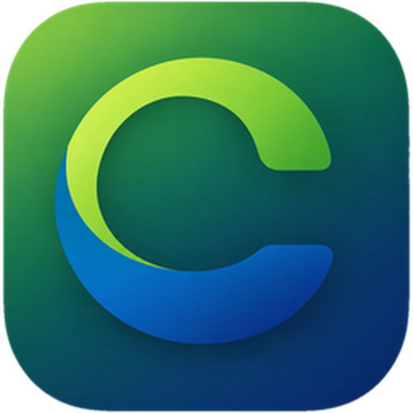
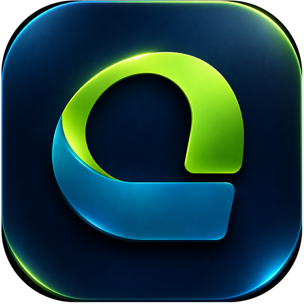
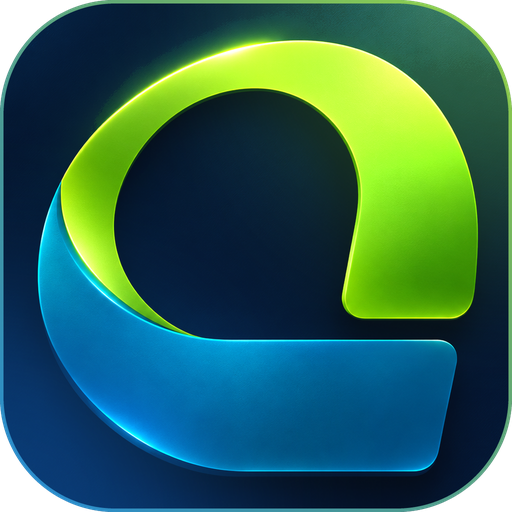
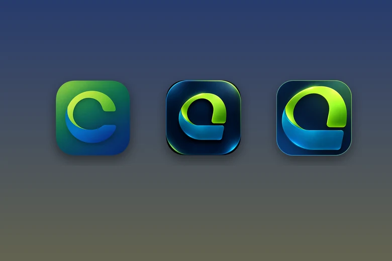
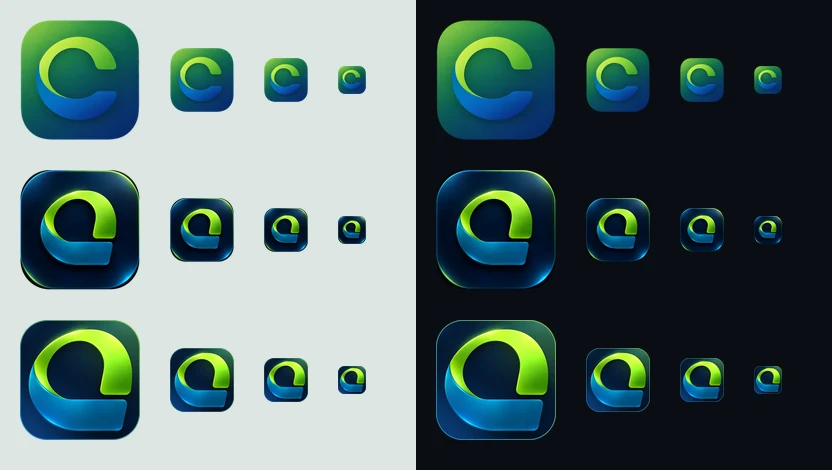
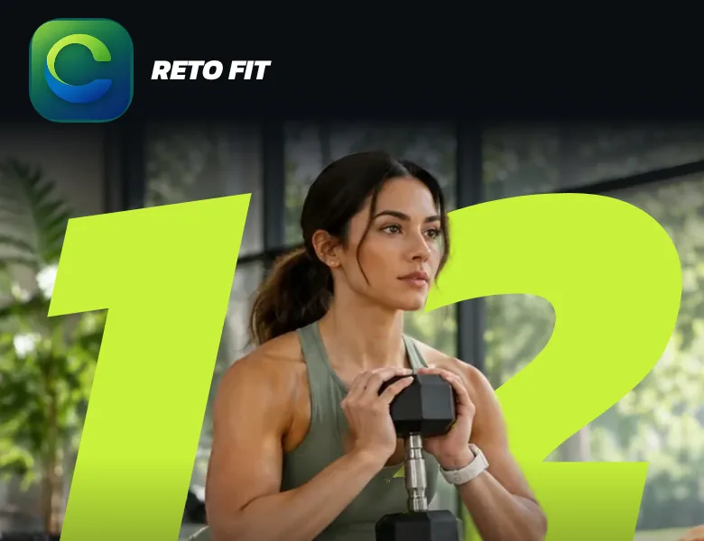
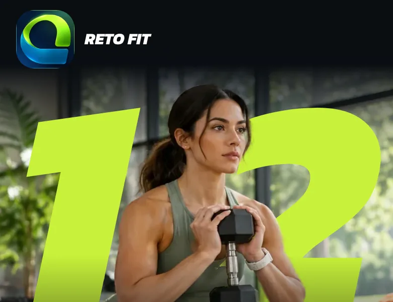
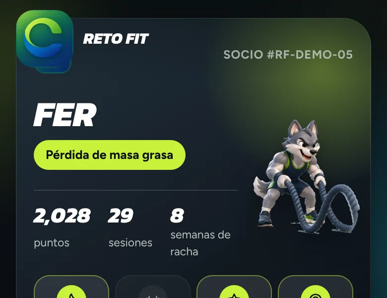
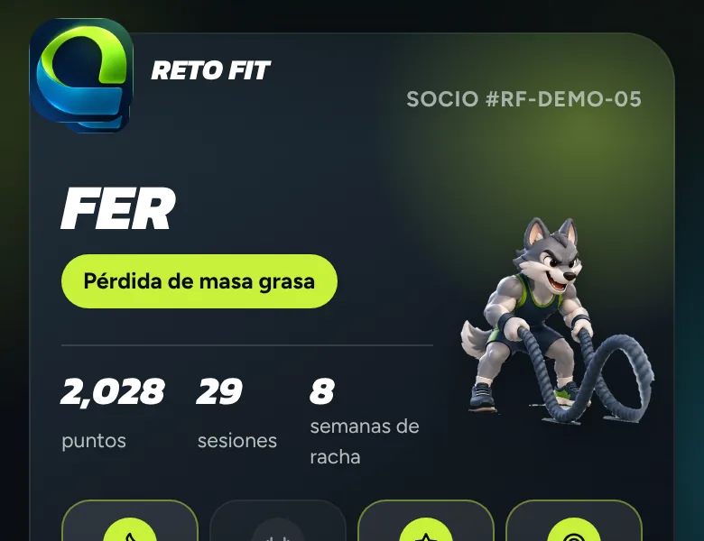

El icono que mandaste, comparado con el actual: tal cual y con los ajustes que le haría para que se vea mejor en el celular.

Actual

Nuevo, tal cual

Nuevo, ajustado (recomendado)
En la pantalla del celular

En tamaños chicos
De grande a chico: como se ve en la app, en la barra de arriba y como favicon. Arriba el actual, en medio el nuevo tal cual y abajo el ajustado, sobre fondo claro y oscuro.

Dentro de la app

Portada · actual

Portada · ajustado

Perfil · actual

Perfil · ajustado
Qué le ajusté
Símbolo más grande: en el original ocupa poco más de la mitad del cuadro; a 40 px se ve chiquito. Lo acerqué para que llene casi todo el cuadro.
Azul menos negro: el fondo es casi negro y en tamaño chico se ve como un hueco oscuro. Lo aclaré a un azul marino, con un brillo lima arriba y azul abajo.
Sin esquinas negras: la imagen trae fondo negro detrás de las esquinas redondas; en el tema claro se verían cuadradas. Las recorté transparentes.
Borde de luz fino: el resplandor del original se pierde en chico; lo cambié por una línea delgada de lima a azul.
Versiones para cada lugar: icono de Android que se recorta en círculo (con margen), icono de iPhone sin transparencia, y la barra de la app.